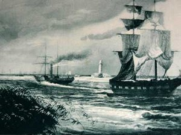

Prima atestare documentara (anul 950) a orasului Sulina, o reprezinta
un document din timpul imparatului bizantin Constantin Porfirogenetul
– „De Administrando Imperi” . Un document turcesc din 1745 vorbeste de
existenta unui far, pe care localniicii trebuiau sa il ingrijeasca si
chiar se ocupau de strangerea cerii necesara la iluminat. Se mai
vorbeste in unele documete si de un far, probabil altul, tot la Sulina
in 1802. Un alt document de legislatie internationala, care
nominalizeaza Sulina ca port fluvio – maritim si pune bazele
navigatiei libere pe Dunare il reprezinta Conventia ruso – austriaca
incheiata la Sankt Petersburg in anul 1840.
Amenajarile intreprinse dupa proiectul inginerului Ch. Hartley pentru
rectificarea bratului Sulina au determinat si dezvoltarea portului de la
gura centrala a fluviului. In anul 1856, prin Tratatul de la Paris se
infiinteaza la Sulina Comisia Europeana a Dunarii (CED), conferind
orasului statut de neutralitate pe timp de pace si razboi si statutul de
port liber, permitand astfel o rapida dezvoltare economica.
Primul razboi mondial, duce la desfiintarea CED in 1939 si pierderea
neutralitati. In timpul celui de-al 2-lea Razboi Mondial, orasul Sulina
devine punct strategic militar, fiind grav afectat de bombardamente.
Intra sub influenta sovietica dupa incheierea razboiului. In prezent,
orasul trece printr-o perioada de acomodare a vietii socio-economice,
constatandu-se o migratie a populatiei, datorita declinului economic din
ultimii ani.